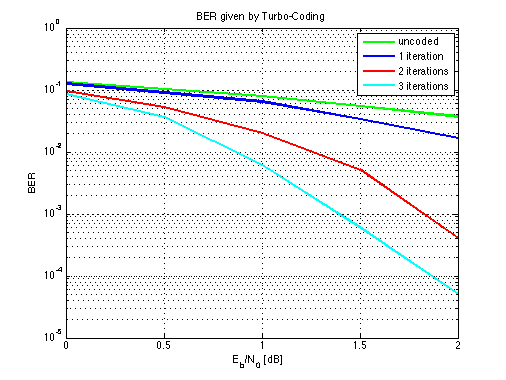

BER performance with Turbo Code
Copyright 2007 Telecommunications Lab
L_total = 400; % infomation bits plus tail bits nframemax = 100; %frame number % Code generator g = [ 1 1 1; 1 0 1 ]; %(7,5) %g = [1 1 0 1; 1 1 1 1];%(15,17) %g = [1 1 1 1 1; 1 0 0 0 1];%(37,21) %g = [1 1 1 1 0 0 1 ; 1 0 1 1 0 1 1];%(171,133) [n,K] = size(g); m = K - 1; nstates = 2^m; puncture = 1; % Code rate rate = 1/(2+puncture); % Fading amplitude; a=1 in AWGN channel a = 1; % Number of iterations niter = 3; EbN0db = [0:.5:2]; for nEN = 1:length(EbN0db) en = 10^(EbN0db(nEN)/10); % convert Eb/N0 from unit db to normal numbers L_c = 4*a*en*rate; % reliability value of the channel sigma = 1/sqrt(2*rate*en); % standard deviation of AWGN noise % Clear bit error counter and frame error counter errs(nEN,1:niter) = zeros(1,niter); errs_uncoded(nEN) = zeros(1,1); nferr(nEN,1:niter) = zeros(1,niter); nframe = 0; % clear counter of transmitted frames while nframe<nframemax nframe = nframe + 1; x = round(rand(1, L_total-m)); % info. bits [temp, alpha] = sort(rand(1,L_total)); % random interleaver mapping en_output = encoderm( x, g, alpha, puncture ) ; % encoder output (+1/-1) %r = awgn(en_output,nEN,'measured'); r = en_output+sigma*randn(1,L_total*(2+puncture)); % received bits r_uncoded=awgn((2 * x - ones(size(x))),nEN,'measured');%x+sigma*randn(1,L_total-m); yk = demultiplex(r,alpha,puncture); % demultiplex to get input for decoder 1 and 2 % Scale the received bits rec_s = 0.5*L_c*yk; rec_s_uncoded = r_uncoded;%*2*en; % Initialize extrinsic information L_e(1:L_total) = zeros(1,L_total); for iter = 1:niter % Decoder one L_a(alpha) = L_e; % a priori info. L_all = logmapo(rec_s(1,:), g, L_a, 1); % complete info. L_e = L_all - 2*rec_s(1,1:2:2*L_total) - L_a; % extrinsic info. % Decoder two L_a = L_e(alpha); % a priori info. L_all = logmapo(rec_s(2,:), g, L_a, 2); % complete info. L_e = L_all - 2*rec_s(2,1:2:2*L_total) - L_a; % extrinsic info. % Estimate the info. bits xhat(alpha) = (sign(L_all)+1)/2; % Number of bit errors in current iteration err(iter) = length(find(xhat(1:L_total-m)~=x)); % Count frame errors for the current iteration if err(iter)>0 nferr(nEN,iter) = nferr(nEN,iter)+1; end end %iter xhat_uncoded = (sign(rec_s_uncoded)+1)/2; % Total number of bit errors for all iterations errs(nEN,1:niter) = errs(nEN,1:niter) + err(1:niter); errs_uncoded(nEN) =errs_uncoded(nEN)+length(find(xhat_uncoded~=x)); end %while ber(nEN,1:niter) = errs(nEN,1:niter)/nframemax/(L_total-m); ber_uncoded(nEN)=errs_uncoded(nEN)/nframemax/(L_total-m); % Frame error rate fer(nEN,1:niter) = nferr(nEN,1:niter)/nframe; end %nEN %figure; semilogy(EbN0db,ber_uncoded,'gr','LineWidth',2);grid on;hold on;semilogy(EbN0db,ber(:,1),'b','LineWidth',2);hold on;semilogy(EbN0db,ber(:,2),'r','LineWidth',2);hold on;semilogy(EbN0db,ber(:,3),'c','LineWidth',2);legend('uncoded','1 iteration','2 iterations','3 iterations');title('BER given by Turbo-Coding');xlabel('E_b/N_0 [dB]'); ylabel('BER'); %hold on;semilogy(EbN0db,ber(:,2),'r','LineWidth',2);grid on; %save turbo_sys_demo EbN0db ber fer errs ber_uncoded